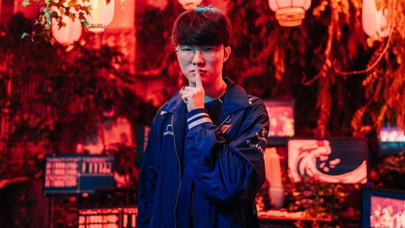

T1 izbacio G2 Esports sa MSI 2024
Korejski gigant silan
G2 Esports će morati da se zadovolji top 4 plasmanom na ovogodišnjem MSI 2024, nakon što ih je korejski gigant T1 deklasirao 3-0 u borbi za opstanak na turniru.
G2 je pred meč udahnuo nadu evropskim navijačima pruživši odličan otpor ekipi T1 u nihovom prethodnom susretu kada ih je T1 savladao tek nakon odlučujuće pete partije, a potom i kada su sa 3-0 pregazili kineskog vicešampiona Top Esports.
Ušao je G2 sa velikim očekivanjima u ovaj meč, ali se na kraju ispostavilo istinitim da je T1 samo mnogo slabije odigrao njihov prethodni susret, i da su ovog puta bili potpuno spremni za sve što im je G2 priredio, kontrolišući meč od početka pa sve do samog kraja.
U prvoj partiji G2 je došao do blage prednosti u goldu na početku meča, dok se T1 fokusirao na zmajeve. U ranoj fazi igre nismo videli previše killova, G2 se uzdao da će Hans Sama na Dravenu uspeti da iznese svoj tim jer kako je partija odmicala tako je imao sve više golda u odnosu na protivnika, ali sve je vrlo brzo palo u vodu kako su krenule timske borbe.
Zeus je perfektno lovio Hans Samu sa Camille, dok je Gumayusi polako jačao na Kalisti i pravio sve veći problem za G2. Oner je bio sjajan na Sejuani i G2 nije mogao da im pripreti sa Kha'Zixom i LeBlanc kada je bilo najpotrebnije, zbog čega je T1 poveo nakon samo 26 minuta igre.
U drugoj partiji videli smo jako loš start Fakera koji je vrlo rano imao 0-3 skor na Aziru, uključući i "poklonjen" kill na midu. Ipak, T1 je ponovo mnogo bolje igrao po mapi i uspeli su da nadoknade zaostatak koji su imali, i nakon pola sata igre se nađu nadomak pobede. G2 je uspeo da sačuva nexus koji je preživeo na dva udarca do rušenja, ali nisu ostavili odbranu u bazi već su jurnuli na Barona, što je Faker iskoristio i teleportom u protivničku bazu završio gejm.
Treća partija je takođe trajala nešto duže od pola sata, Caps je konačno dobio Tristanu, ali na kraju nije vredelo. Iako su ponovo dobro startovali partiju T1 je tačno znao šta treba da radi, a kada se činilo da G2 može do Barona, T1 je jednom velikom timskom borbom stavio tačku na treću partiju a samim tim i ceo meč.
Oni će sutra igrati protiv prvaka Kine Bilibili Gaminga koji ih je već jednom pobedio na turniru. Pobednik ovog meča će igrati u velikom finalu protiv Gen.G za titulu prvaka MSI 2024.